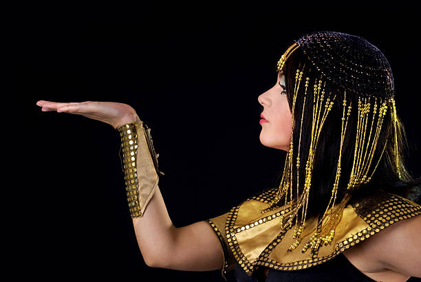

He was a Roman general—fiery, bold, with laughter that filled banquet halls and a temper that could bend iron. A soldier, yes, but also a man of pleasure and poetry, a creature of instinct and passion. He was Rome’s strength, second only to Julius Caesar, whose murder had left a bleeding wound in the heart of the Republic. Rome was now a storm, and Antony stood in its eye. They met not in battle, but in seduction. Years before, Cleopatra had known Caesar. From him, she had a son and political security. But now, after Caesar’s death, her fate wavered. Egypt’s future balanced on the Roman scales. Antony summoned Cleopatra to Tarsus to answer for her loyalty. But it was she who arrived like a goddess.

On a golden barge with purple sails, Cleopatra entered the harbor dressed as Aphrodite, surrounded by perfumed servants and music from unseen harps. The river held its breath. Antony, known for his excesses, found himself silenced. She did not need to plead her case—she simply was the case. That night, they dined beneath torches that mimicked the stars. They spoke not of politics, but of dreams. She teased his pride, he challenged her wit. They laughed, they debated, and somewhere between the wine and the silk, they fell—not foolishly, but deeply. He followed her to Alexandria. What began as strategy became obsession. Cleopatra and Antony created a world within their palace walls. They dressed as gods, held feasts that lasted days, and founded a secret society—the “Inimitable Livers”—where joy was worshipped and time forgotten. But behind the jewels and kisses was something more dangerous: trust. Antony saw in Cleopatra not just beauty, but freedom. And she, in him, a man who saw her not as a symbol, but as a woman. Yet Rome did not sleep. In Rome, Octavian, Caesar’s heir, watched with rising fury. Antony had married Octavian’s sister, Octavia, for politics. But now he lived in Egypt, a foreign land, with a foreign queen, gifting her territory and power, raising her son as a prince. Octavian declared war—not just on Egypt, but on love itself. Antony’s loyalty was torn in two: to Rome, or to Cleopatra. To duty, or to desire. And as Rome marched, so did fate. At Actium, their navies clashed. It was a sea of fire and steel. The Roman ships were stronger. Cleopatra, fearing loss, turned her fleet and fled. Seeing her sails vanish, Antony broke. He abandoned the battle to follow her. His men watched their general choose love over victory. That moment sealed their fate.
Rome claimed the seas. Octavian marched toward Alexandria. Antony’s allies abandoned him. In the palace, Cleopatra prepared for the end—not with despair, but with dignity. She gathered her treasures, her children, and wrote letters to Octavian, bargaining for their future. Antony, spiraling with guilt, believed her dead—rumor had it she’d taken her own life. Broken, he fell on his sword. But he did not die.
Word reached Cleopatra too late. Bloodied and gasping, Antony was brought to her hidden tomb. She cradled him in her arms, tears streaking her painted face. He looked into her eyes and smiled. “Don’t grieve for me,” he whispered. “This… was worth it.” And then he was gone. Cleopatra was now alone. Octavian entered the city in triumph, expecting a woman cowed by loss. Instead, he found a queen still clothed in gold, her chin raised. She spoke with composure, offered peace, but read in his eyes that he planned to parade her through Rome—his ultimate trophy. She would not be displayed. On the last night of her life, Cleopatra wrote a letter, sealed it, and gave it to Octavian. Then, with her maidens Charmian and Iras, she prepared herself as she once had for Antony—dressed in royal robes, adorned with her serpent crown. In her hand, she held a small asp—its bite swift and silent.
The next morning, Octavian found her on a golden couch, her body still warm, her expression serene. At her feet lay Iras and Charmian, faithful even unto death. They were buried together, as she had begged—Cleopatra and Antony, side by side, in a tomb near the sea. Rome went on. Octavian became Augustus, emperor of the world.
But across time, across empires, their love endured—not as a cautionary tale, but as a legend. A love that defied borders and thrones. A love that dared to dream beyond death.

They had ruled as mortals. But they are remembered as gods.